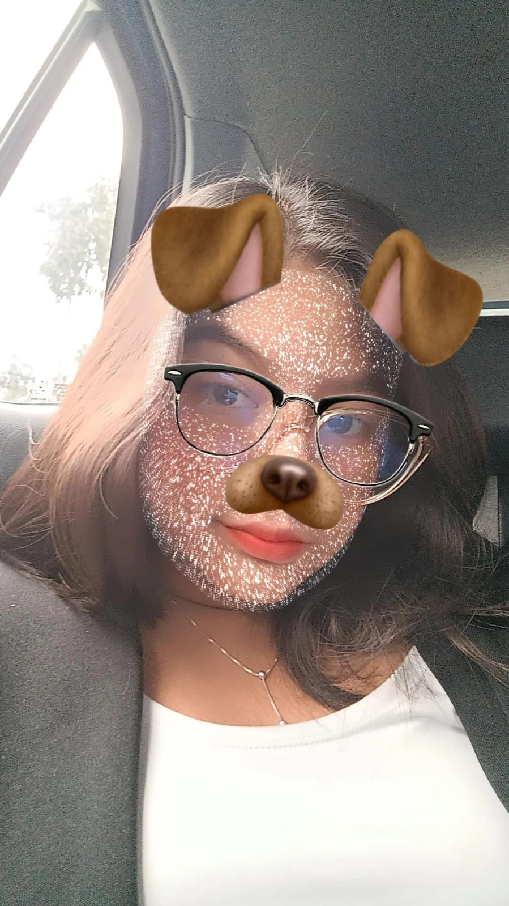
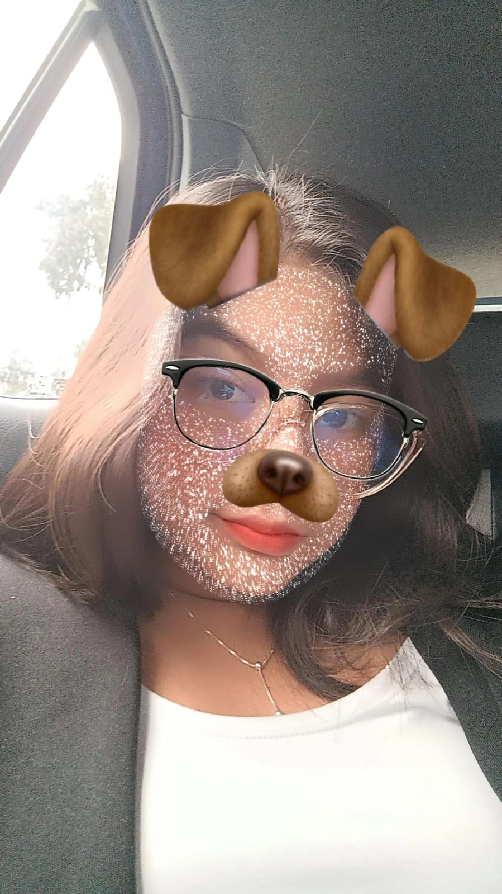
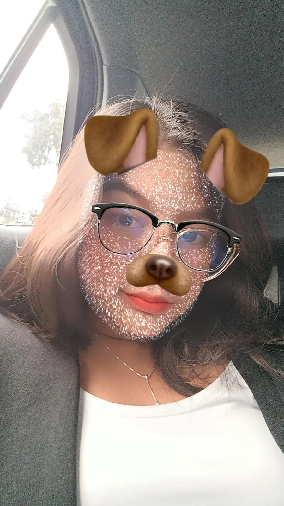

En este hermoso momento, quiero expresarte mis sentimientos más sinceros.
Fuiste la luz de mi vida y cada día a tu lado fue un regalo que atesoré.
Acepta éste pequeño presente.
Con todo mi color chaufa,
Luis
LA M√ÅS HERMOSAüòç
